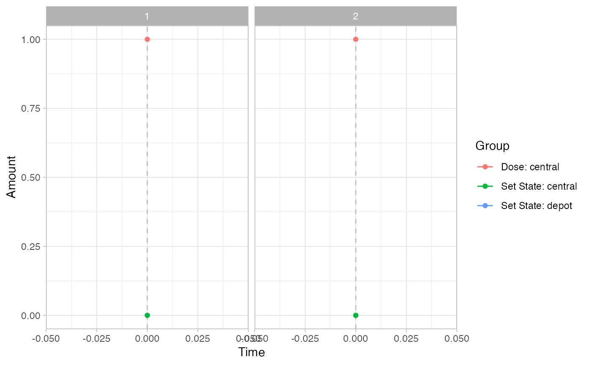

This will provide information like parameter names, covriates, etc from an rxode2 object.
Value
List with the following elements.
isgood: Return status of the function.
msgs: Error or warning messages if any issues were encountered.
subjects: Data frame of parameters and covariates for the subjects generated.
iCov: Data frame of the covariates.
params: Data frame of the parameters.
Details
See below.
The underlying simulations are run using rxode2, and as such we need
an rxode2 system object. From that we can either simulate subjects or
load them from a file. Next we need to define a set of rules. These will
be a set of conditions and actions. At each evaluation time point the
conditions are evaluated. When a condition is met the actions associated
with that condition are executed. For example, if during a visit (an
evaluation time point) the trough PK is below a certain level
(condition) we may want to increase the dosing regimen for the next
dosing cycle (action).
Creating subjects
Subjects are expected in a data frame with the following column headers:
idIndividual subject idNames of parameters and iiv as specified in the
inisection of therxode2function specificationNames of covariates used in the model.
mk_subjects() — Creates subjects for simulation by sampling based on
between-subject variability and generating covariate information based
on user specifications.
Covariates
The covs input is a list with the following structure:
type: Can be either “fixed”, “discrete”, or “continuous”.
sampling: This field is only needed for a “continuous” covariate ’ type and can be either “random”, “normal” or “log-normal”.
values: This field depends on the type and optional sampling above.
fixed: A single value.
discrete: A vector of possible discrete elements.
continuous, random: Two values the first is the lower bound and the second is the upper bound.
continuous, normal: Two values the first is the mean and the second is the variance.
continuous, log-normal: Two values the first is the mean and the second is the variance.
This examples shows the SEX_ID randomly sampled from the values
specified, SUBTYPE_ID fixed at a value, and WT sampled from a
log-normal distribution.
Rule-based simulations
simulate_rules() — This will run simulations based on the rule
definitions below.
Rules
Rules are a named list where the list name can be a short descriptive label used to remember what the rule does. These names will be returned as columns in the simulated data frame.
condition: Character string that evaluates to eitherTRUEorFALSE. When true theactionportion will be triggered. For a list of objects available see the Rule-evaluation environment below.fail_flag: Flag set in therule_idcolumn when the condition is not met (set to"false"if not specified).true_flag: Flag set in therule_idcolumn when the condition is met (set to"true"if not specified).action: This is what the rule will trigger can be any of the following:type: This defines the action type and can be either"dose","set state", or"manual".
Based on the type the action field will expect different elements.
Dosing:
actiontype:"dose"values: Character string that evaluates as a numeric vector dosing amounts (e.g."c(3, 3, 3, 3)")times: Character string that evaluates as a numeric vector of times (e.g."c(0, 14, 28, 42)")durations: Character string that evaluates as a numeric vector of durations (e.g."c(0, 0, 0, 0)", zero for bolus dosing)
Changing a state value:
actiontype:"set state"state: Character string with the name of the state to set ("Ac")value: Character string that evaluates as a numeric value for state (e.g."Ac/2"would set the state to half the value of Ac at the evaluation point)
Manual modification of the simulation:
actiontype:"manual"code: Character string of code to evaluate.
Rule-evaluation environment
Beyond simple simulations it will be necessary to execute actions based
on the current or previous state of the system. For this reason, when a
condition or elements of the action (e.g., the values, times and
durations of a dose action type) are being evaluated, the following
objects will be available at each evaluation point:
outputs: The value of each model output.
states: The value of each named state or compartment.
covariates: The value of each named covariate.
subject-level parameters: The value of each named parameter.
rule value: The last value the rule evaluated as.
id: Current subject id.time: Current evaluation time.SI_SUB_HISTORY: A data frame of the simulation history of the current subject up to the current evaluation point.SI_subjects: The subjects data frame.SI_eval_times: Vector of the evaluation times.SI_interval_ev: The events table in it’s current state for the given simulation interval.SI_ev_history: This is the history of the event table containing all the events leading up to the current interval.SI_ud_history: This is a free form object the user can define or alter within the “manual”action type (ud-user defined, history).
Time scales
You can include columns in your output for different time scales if you
wish. You need to create a list in the format below. One element should
be system with a short name for the system time scale. The next should
be details which is a list containing short names for each time scale
you want to include. Each of these is a list with a verbose name for the
time scale (verb) and a numerical conversion indicating how that time
scale relates to the others. Here we define weeks and days on the basis
of seconds.
Examples
library(formods)
library(ggplot2)
# For more information see the Clinical Trial Simulation vignette:
# https://ruminate.ubiquity.tools/articles/clinical_trial_simulation.html
# None of this will work if rxode2 isn't installed:
if(is_installed("rxode2")){
library(rxode2)
set.seed(8675309)
rxSetSeed(8675309)
my_model = function ()
{
description <- "One compartment PK model with linear clearance using differential equations"
ini({
lka <- 0.45
label("Absorption rate (Ka)")
lcl <- 1
label("Clearance (CL)")
lvc <- 3.45
label("Central volume of distribution (V)")
propSd <- c(0, 0.5)
label("Proportional residual error (fraction)")
etalcl ~ 0.1
})
model({
ka <- exp(lka)
cl <- exp(lcl + etalcl)
vc <- exp(lvc)
kel <- cl/vc
d/dt(depot) <- -ka * depot
d/dt(central) <- ka * depot - kel * central
Cc <- central/vc
Cc ~ prop(propSd)
})
}
# This creates an rxode2 object
object = rxode(my_model)
# If you want details about the parameters, states, etc
# in the model you can use this:
rxdetails = fetch_rxinfo(object)
rxdetails$elements
# Next we will create subjects. To do that we need to
# specify information about covariates:
nsub = 2
covs = list(
WT = list(type = "continuous",
sampling = "log-normal",
values = c(70, .15))
)
subs = mk_subjects(object = object,
nsub = nsub,
covs = covs)
head(subs$subjects)
rules = list(
dose = list(
condition = "TRUE",
action = list(
type = "dose",
state = "central",
values = "c(1)",
times = "c(0)",
durations = "c(0)")
)
)
# We evaulate the rules for dosing at time 0
eval_times = 0
# Stop 2 months after the last dose
output_times = seq(0, 56, 1)
# This runs the rule-based simulations
simres =
simulate_rules(
object = object,
subjects = subs[["subjects"]],
eval_times = eval_times,
output_times = output_times,
rules = rules)
# First subject data:
sub_1 = simres$simall[simres$simall$id == 1, ]
# First subjects events
evall = as.data.frame(simres$evall)
ev_sub_1 = evall[evall$id ==1, ]
# All of the simulation data
simall = simres$simall
simall$id = as.factor(simall$id)
# Timecourse
psim =
plot_sr_tc(
sro = simres,
dvcols = "Cc")
psim$fig
# Events
pev =
plot_sr_ev(
sro = simres,
ylog = FALSE)
pev$fig
}
#>
#>
#> ℹ parameter labels from comments are typically ignored in non-interactive mode
#> ℹ Need to run with the source intact to parse comments
#>
#>
#>
#>
#> Warning: multi-subject simulation without without 'omega'
#>
#>
#> Warning: multi-subject simulation without without 'omega'
#> `geom_line()`: Each group consists of only one observation.
#> ℹ Do you need to adjust the group aesthetic?
#> `geom_line()`: Each group consists of only one observation.
#> ℹ Do you need to adjust the group aesthetic?
